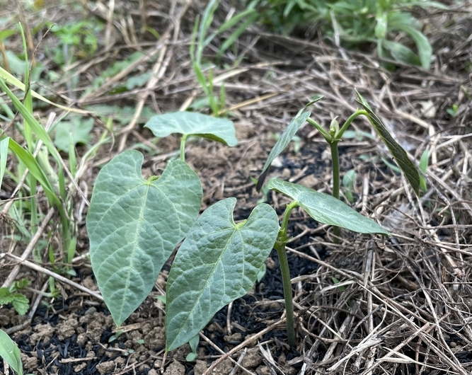
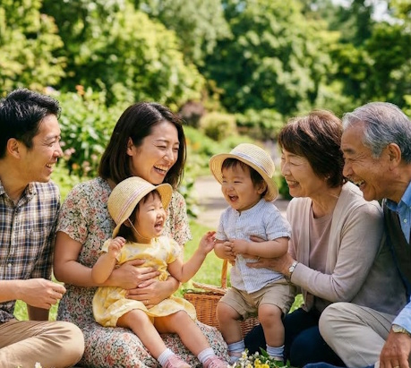

伝統食材としての豊かな栄養価
高知産ムクナ豆100%使用
古くから「八升豆」の名で親しまれてきた伝統食材。高知の太陽を浴びて育った豆には、日々の健康維持に欠かせない特有の天然成分が凝縮されています。自然の恵みをそのままの形で届けます。
高知の太陽と土が育てた
明日への活力を、種から、手渡しで。
毎日を支えるのは、続けられる安心と、おいしさです。高知の圃場で育てた八升豆を、焙煎したての香りとともにお届けします。家族の食卓に自然になじむ一杯を、今日からはじめませんか。
八升豆（はっしょうまめ）は、ムクナ豆の在来系統として古くから親しまれてきた豆です。空と水と大地合同会社では、 高知県南国市の圃場で八升豆を育て、焙煎から商品化まで一貫して行っています。詳しい成分や研究背景は 八升豆とは？の解説ページ、研究情報、 食べ方・飲み方ガイド、Q&Aでご覧いただけます。
公式ショップで順次販売中。販売状況は各ページでご確認いただけます。
高知産ムクナ豆100%使用
古くから「八升豆」の名で親しまれてきた伝統食材。高知の太陽を浴びて育った豆には、日々の健康維持に欠かせない特有の天然成分が凝縮されています。自然の恵みをそのままの形で届けます。
農薬・化学肥料不使用
四国山脈からの清らかな水と、ミネラル豊富な土。種まきから収穫まで、余計なものを一切加えず、一株一株の状態を見極めながら大切に育てています。
焙煎したてを最短発送
豆は繊細で鮮度が命。職人が大釜へ向かい大きな「かい棒」を操り、手混ぜで一粒一粒に魂を込めて焙煎。昔ながらの手法でじっくり煎り上げた、最高の香りと出来たての鮮度をそのままにお届けします。
Varieties
これまで様々なムクナ豆種を栽培し研究してきました。その中でも八升豆（在来種）が一番L-ドーパの含有量が多いことがわかりました。


Power
八升豆の恵み。八升豆（ムクナ豆）は、古くから人々の健康を支えてきた伝統的な食材です。この特別な豆には、ムクナ豆特有の成分である天然のL-ドーパが豊富に含まれています。
忙しい毎日の中で、日々の健康維持を心がけたい方や、いきいきとした毎日を送りたい方に。八升豆の自然の恵みが、あなたのはつらつとしたライフスタイルをサポートします。

Knowledge
ドーパミンは、意欲や集中力に関わる脳内の神経伝達物質です。八升豆（ムクナ豆）には、その材料となる天然のL-ドーパが含まれています。ドーパミンのはたらきについて、医師監修の医療情報サイトの解説記事でもご紹介されています。
Growth
芽吹き、蔓を伸ばし、花を咲かせ、たわわに実るまで。南国高知の太陽を浴びた八升豆は、驚くほどの速さで、逞しく天へと伸びていきます。



この圧倒的な成長エネルギーこそが、一粒一粒に蓄えられた生命力の証。豊かな大地が育んだ「ちから」を、そのまま、あなたの明日への活力へ。
First Step
まずは少量から。毎日の食卓に取り入れやすい方法と、よくある不安への回答を用意しています。

Company
日本で生き、働き、大切な人の幸せを願う。そのすべての営みの土台は、日々の「食」にあります。愛情を込めて育てた一粒一粒は、私たちの血となり肉となり、明日を生きる力強い生命力へと変わります。